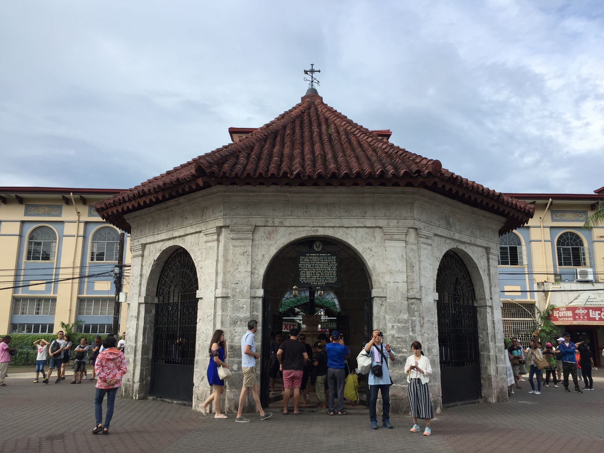
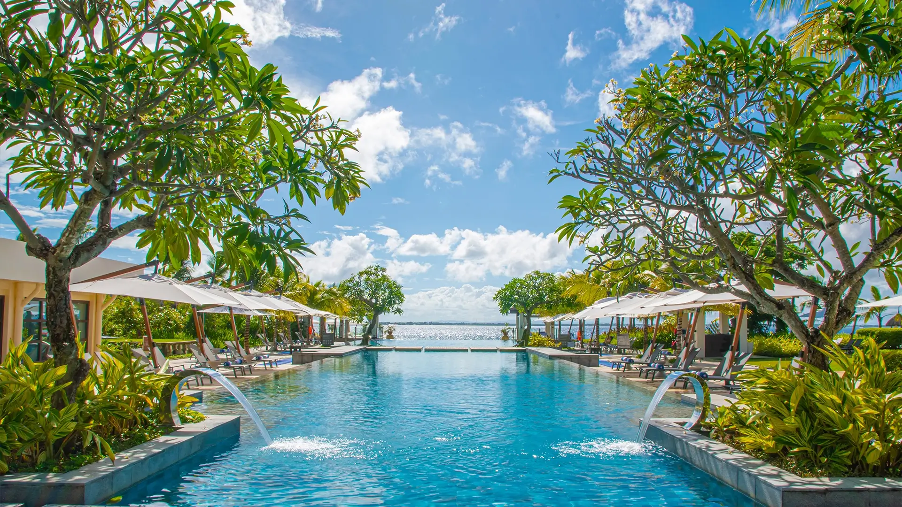
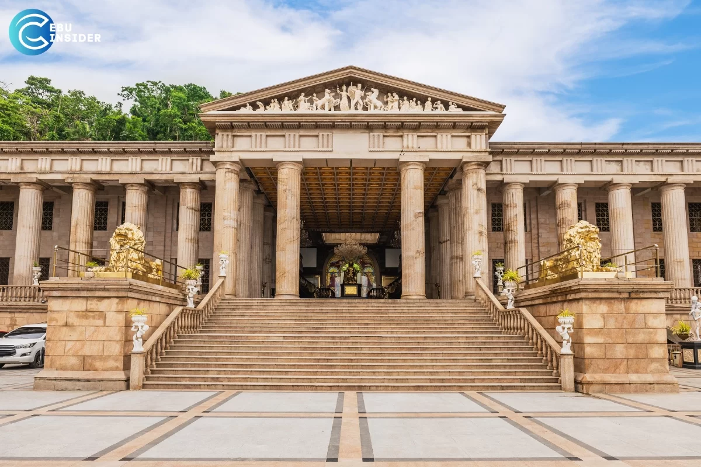
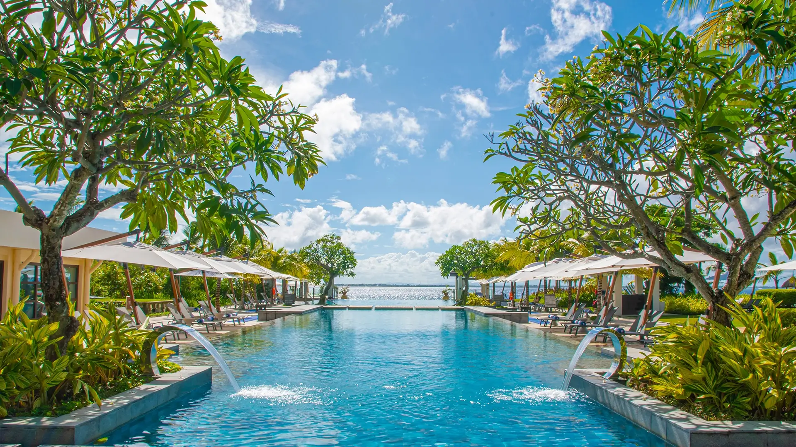
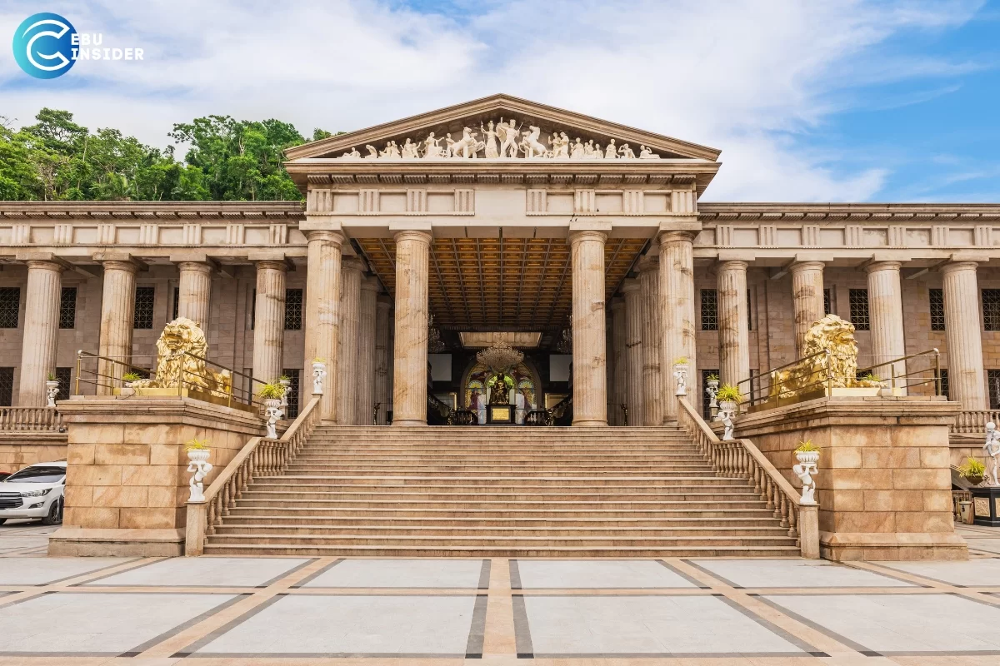
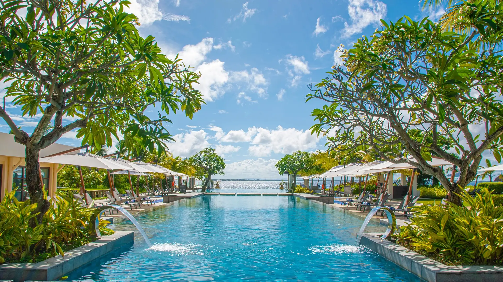
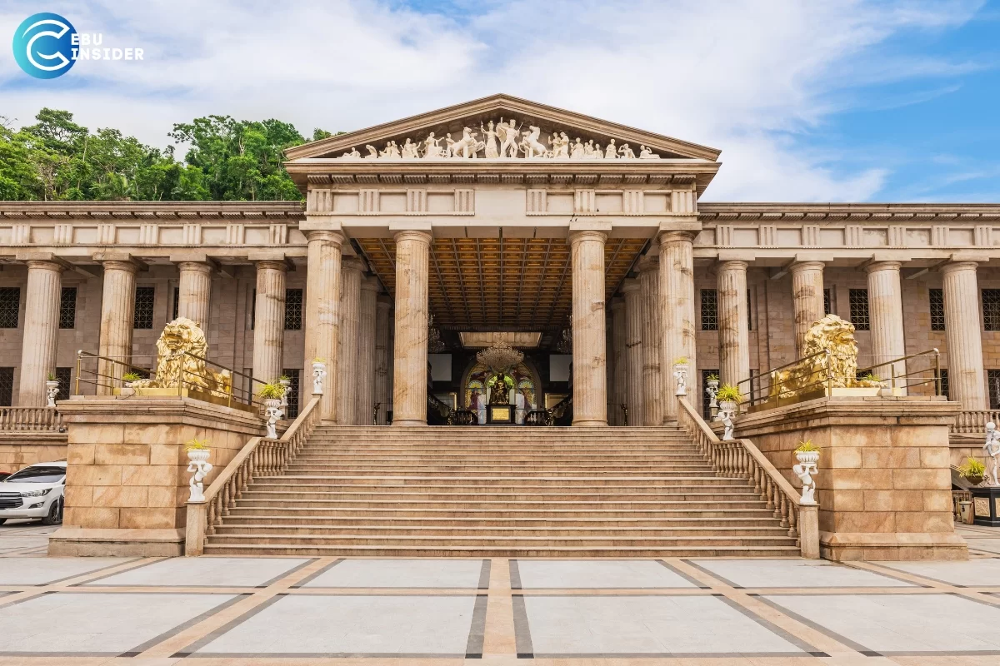

 





#TRAVELGoals
TRAVEL SPOTS
- Basilic Del Santo Nino
- The Basilica del Santo Niño, located in Cebu City, Philippines, stands as one of the most significant religious and historical landmarks in the country. Built in the 16th century, this iconic church is renowned for housing the revered Santo Niño de Cebú, a centuries-old statue of the Child Jesus.
Every January, the church becomes the focal point of the grand Sinulog Festival, a vibrant celebration in honor of the Santo Niño, attracting millions of devotees and tourists from around the world.
A visit to the Basilica del Santo Niño offers a unique glimpse into the Philippines' rich cultural and religious heritage, making it a must-see destination for travelers seeking both spiritual enlightenment and historical enlightenment.
- Basdaku Beach
- Basdaku, also known as Basdaku White Beach, is a popular beach destination located in Moalboal, Cebu, Philippines. It is renowned for its powdery white sand, crystal-clear waters, and serene ambiance, making it a favorite among locals and tourists alike. Basdaku offers various recreational activities such as swimming, sunbathing, beach volleyball, snorkeling, and diving. The beach is surrounded by coconut trees and provides stunning views of the sunset, making it an ideal spot for relaxation and leisure. Additionally, there are accommodations, restaurants, and other amenities available nearby, ensuring a comfortable and enjoyable stay for visitors.
- Crimson Resort and Spa Mactan
-
Crimson Resort and Spa Mactan, located in Cebu, Philippines, is a luxurious beachfront retreat that offers an unparalleled tropical escape for tourists seeking relaxation and indulgence. Situated on the pristine shores of Mactan Island, this five-star resort boasts stunning views of the crystal-clear waters of the Visayan Sea and is surrounded by lush tropical landscapes.
For those seeking relaxation and rejuvenation, the resort's Aum Spa offers a sanctuary of serenity, where guests can indulge in a variety of luxurious treatments inspired by traditional Filipino healing rituals. Additionally, Crimson Hotel provides an array of recreational activities, including water sports, island-hopping tours, and cultural experiences, ensuring that every guest can create unforgettable memories during their stay.
- Temple Of Leah
- Welcome to the Temple of Leah, a magnificent testament to love and grandeur nestled in the heart of Cebu City, Philippines. This architectural marvel stands as a symbol of undying devotion and reverence, dedicated to the eternal love between Teodorico Adarna and his wife, Leah Villa Albino-Adarna.
Beyond its architectural splendor, the Temple of Leah boasts panoramic views of Cebu City and its surrounding landscapes, providing the perfect backdrop for unforgettable moments and photographs. Whether you're a history enthusiast, an architecture buff, or simply seeking a tranquil escape from the hustle and bustle of city life, a visit to the Temple of Leah promises an enriching experience filled with awe and wonder.
About Us
Send us your email to always get notified